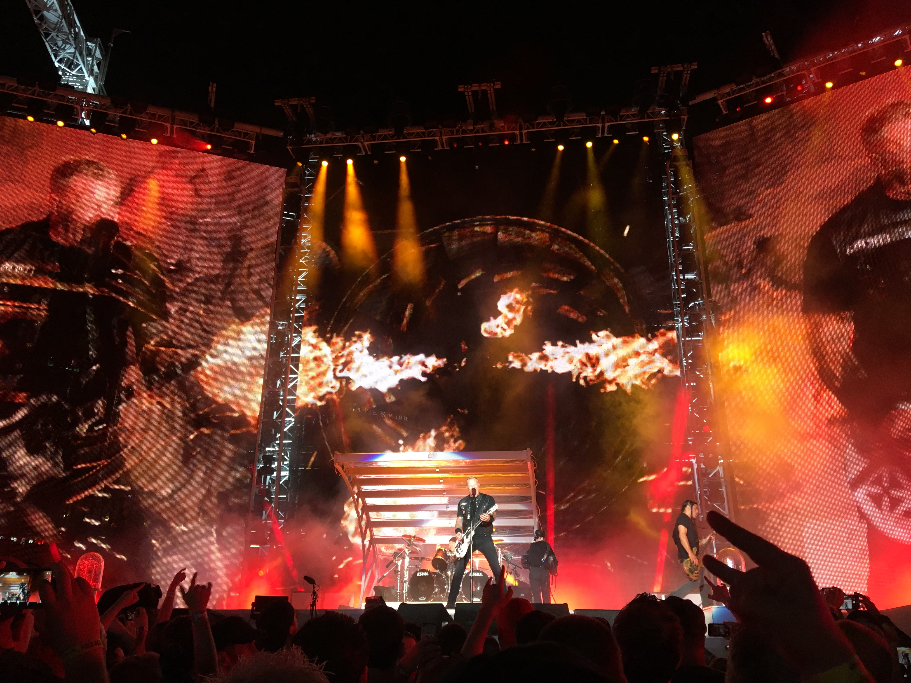
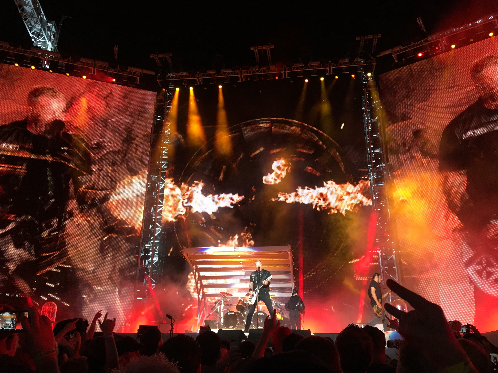
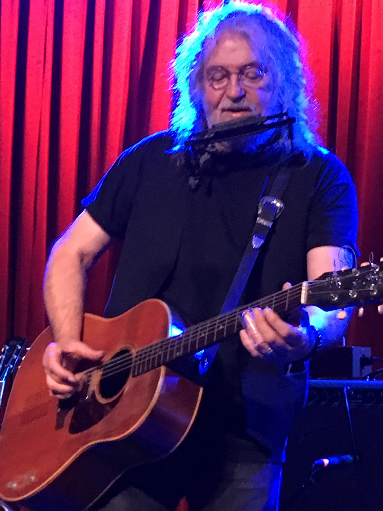
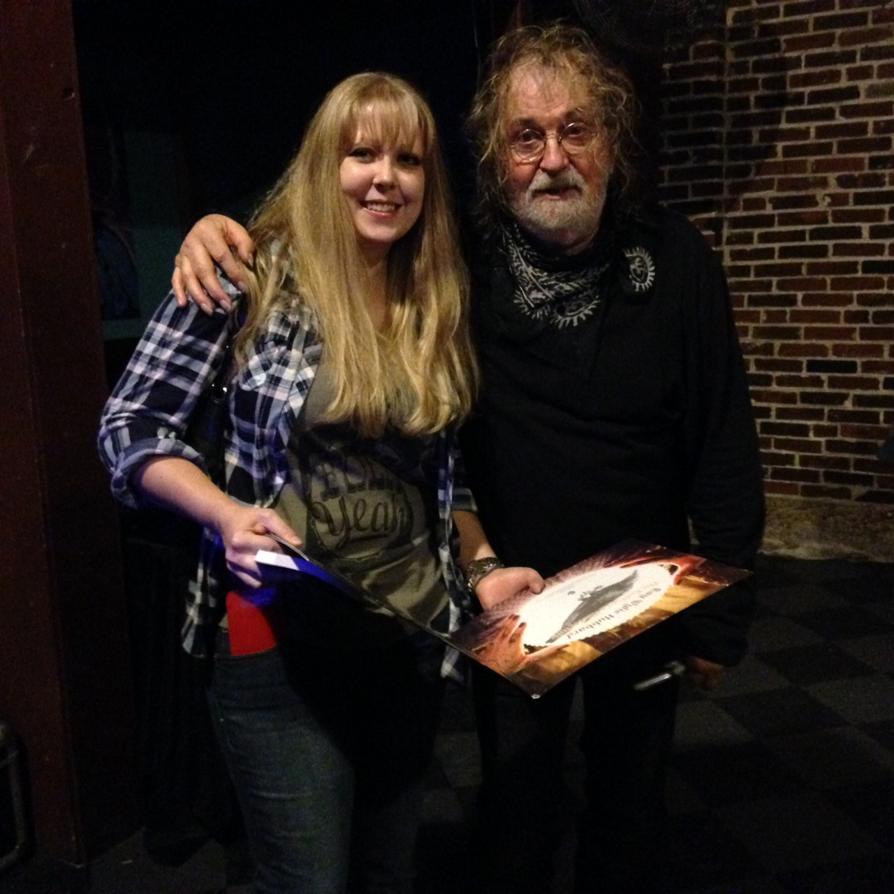
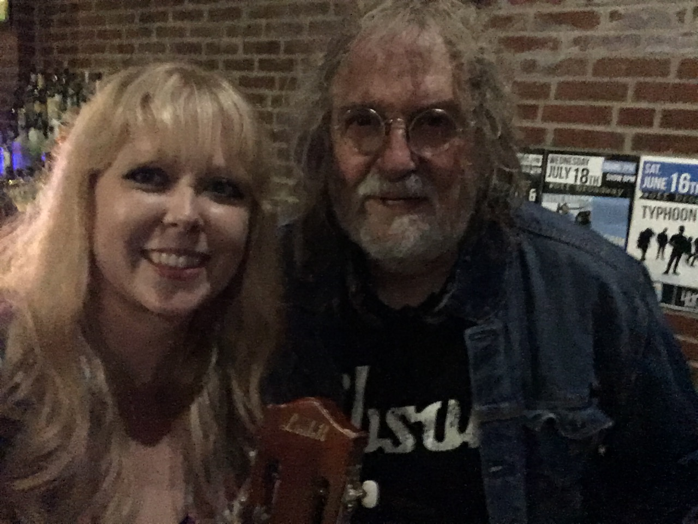
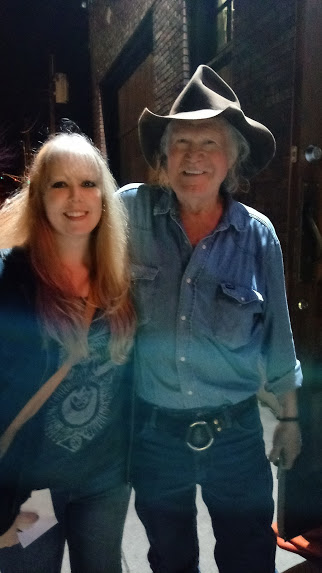

Metallica
I was lucky enough to win Snakepit Passes for the 2017 Metallica show at Busch Stadium. I took my friend Mike, a lifelong Metallica fan, to the show with me. We watched the show from a pit built inside of the stage, and were close enough that we could touch and high-five all the members of the band! The entire experience was surreal, and we had the time of our lives!
 



Tom Petty & The Heartbreakers
I've been a massive Tom Petty fan for many years, and when he announced what would sadly become his final tour, I immediately knew that I had to see him again. I had been saving a Ticketmaster gift card for just the right occasion, and was able to score a lone seat in the 3rd row. Although I attended the show by myself, it was one of the most magical nights of my life. Through his music, radio show, and other projects, Tom has been a constant influence through many phases of my life, and I will always be grateful for this last opportunity to see him perform.


Ray Wylie Hubbard & Billy Joe Shaver
Both of these artists are true legends in the outlaw country music scene. Each's songwriting genius rivals that of the other, and they both possess a unique, powerful, and at times humorous, style of storytelling. I've had the honor of meeting them both, and getting a few autographs has been the icing on the cake.
   